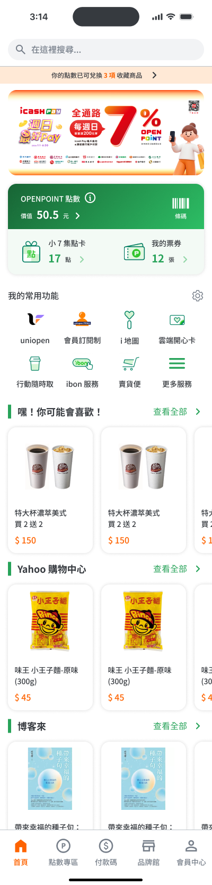
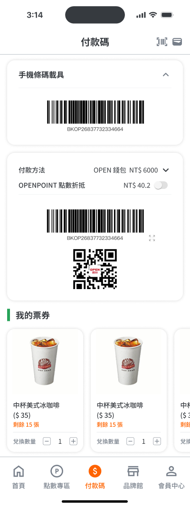

OPENPOINT Redesign
讓 OPENPOINT 的價值被真正用到——從 854 則負評出發，重整點數、票券與支付的體驗。

Overview專案概述
OPENPOINT 從紅利點數，一路長成串起點數、會員、支付與 7-ELEVEN、康是美、博客來等子品牌的平台。功能越加越多，產品定位卻越來越模糊——近一年累積 854 則 1–3 星負評。
我們以「讓 OPENPOINT 的價值被真正用到」為目標，在保留品牌曝光的前提下重整資訊架構，並重新設計首頁、品牌館、付款碼與票券四個核心頁面。
首頁
條碼集中、常用功能放大
打開就能出示條碼、折抵點數
品牌館
品牌內容獨立成新 Tab
功能與行銷分開，兩邊都被看見
付款碼
不用點開就看到餘額
結帳時直接切換付款、兌換票券
票券
入口前移＋個人化推薦
更快找到、用到想要的券
Details專案細節
專案目的
降低資訊密度與操作複雜度，整合點數與支付流程，讓使用者快速、順暢地完成目標任務。
專案假設
- 把「任務操作」和「行銷內容」分開，使用者能更快找到常用功能，廣告也不再打斷結帳
- 清楚呈現點數的累積、折抵與到期，使用者會更願意、也更常用掉點數
- 把支付、票券整合進同一個結帳流程，能減少切換與重複操作
研究 & 驗證方法
- 負評分析（854 則）
- 線上問卷（102 份）
- 7-ELEVEN 實地觀察
- 高頻用戶深度訪談＋卡片分類（6 位）
- 可用性測試＋放聲思考（4 位）
Findings研究發現
問卷中，前三大痛點是找不到功能、速度慢、廣告干擾。
另外，約 6 成使用者會累積點數，實際用掉點數的卻只有約 4 成——點數的使用過程本身就有問題。
整體滿意度
操作難易度也只有 3.1 / 5，多數人落在「普通」
把它當成「7-ELEVEN 會員 App」
點數、支付、子品牌的平台定位，沒有被使用者理解
沒注意過其他品牌的優惠
也有 54% 看到品牌優惠會直接忽略或幾乎不點，品牌曝光沒有發揮效果
＊問卷多在學生與年輕族群社群發放，結果可能偏向年輕使用者。
接著深訪 6 位高頻用戶（用 3 年以上、每週 3–5 次、使用情境 4 種以上），問題集中在三個環節：
導覽混亂、廣告打斷操作
名詞定義重複、常用功能區域狹小，首頁的搜尋只能搜商品、搜不到功能。
點數機制不透明
不清楚消費怎麼換成點數、折抵條碼藏得深，也沒有到期提醒。
支付與禮券缺乏整合
看不到各支付方式餘額，切換要退出重來；禮券種類多，不知道從哪裡開啟使用。
想用 APP 結帳時，要先關掉廣告才能進行操作，後面有人在排隊時真的很有壓力。USER 01
點數常常放著放著就過期了，而且快過期前系統也沒有提醒。USER 02
我們如何降低資訊密度與操作複雜度，並整合點數機制與支付流程，讓使用者能快速且順暢地完成目標任務？
情感
不被打擾、更安心
減少結帳與兌換時的打斷，降低排隊時的壓力
行為
更容易完成操作
整合支付、購物、寄取件等常用功能，減少切換
反思
重新理解 OPENPOINT
清楚呈現點數的累積、折抵與兌換關係
負評分析＆問卷、實地觀察
從 854 則負評歸納問題面向，再用 102 份問卷了解使用頻率、常用功能與痛點，並到 7-ELEVEN 觀察使用者出示條碼、使用優惠券與支付的時機。
深度訪談＆卡片分類
深訪 6 位高頻用戶，請他們畫出理想首頁並做卡片分類。依結果把架構重整為五大分類：首頁／品牌館／付款碼／點數兌換／會員中心，使用率低的「服務」頁併入首頁常用功能。
介面設計
首頁
資訊層級重構
Banner 置頂，保留曝光又不打斷操作；點數、集點卡、票券與條碼集中在會員區，點一下就叫出條碼。
品牌館
獨立專區
品牌商品、活動與內容集中到新的 Tab，和功能型內容分開。
付款碼
重構支付流程
不用點開就能看到各支付方式的餘額，在結帳頁直接切換付款方式，並可用點數折抵。
票券
從兌換到結帳一次完成
收藏商品直接用點數兌換，勾選即將過期的票券，接著出示付款碼完成結帳；「我的票券」入口前移，集點進度一眼看到。
可用性測試＆迭代
招募 4 位高頻用戶（20–31 歲），以放聲思考完成四個核心任務，最後填寫滿意度量表。
任務 1｜現金結帳＋會員條碼
條碼集中在醒目的會員專區，能快速出示並折抵點數
任務 2｜兌換券兌換商品
票券入口放大並集中在首頁，能快速找到並兌換
任務 3｜付款碼結帳＋兌換
付款更流暢，但切換付款方式的區塊不容易被發現
任務 4｜瀏覽品牌館
部分使用者不理解品牌館用途，用品牌分類反而更難找商品

迭代
付款碼
切換區塊的標題和內文層級太接近，不夠明顯。
迭代
品牌館
使用者更傾向用「商品需求」來瀏覽，而不是先認識品牌。
Result成果
四個月內，從 854 則負評一路走到改版原型，並找 4 位高頻使用者實際操作驗證。測試中順利的地方保留，卡住的地方再改一輪。
資訊架構重整
改版核心頁面
核心任務順利完成
發現問題並迭代
→ 一版經過驗證的改版提案
Reflection心得與反思
產品還是要賺錢的。
做這個專案才發現，設計不能只聽使用者想要什麼，也要顧到公司想達成的目標，兩邊都要想辦法兼顧。
要多問一句「為什麼」。
使用者的抱怨大家都看得到，但真正重要的是挖出背後的原因。我覺得把問題定義清楚，是我最需要再練習的地方。
AI 很快，但不懂情況。
我有試著用 Claude Code 做原型，它整理洞察整理得很快，可是沒想到品牌曝光這種商業上的事。AI 可以幫很多忙，但最後還是要靠人來判斷。